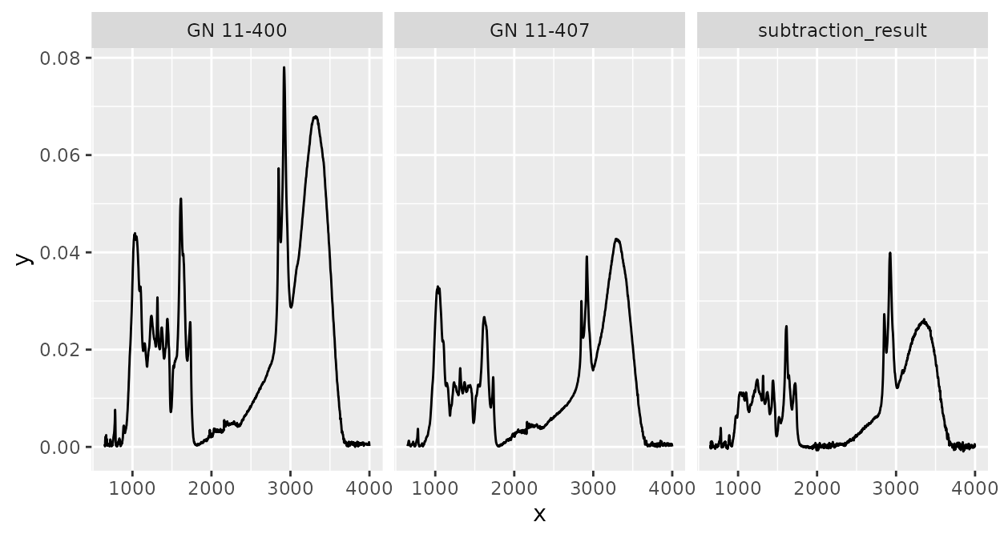

Introduction
Purpose
The purpose of this vignette is to describe the structure and methods
of objects of class ir. ir objects are used by
the ‘ir’ package to store spectra and their metadata. This vignette
could be helpful if you want to understand better how the ‘ir’ package
works, how to handle metadata, how to manipulate ir
objects, or if you want to construct a subclass based on the
irclass.
This vignette does not give an overview on how to use the ‘ir’
package, on functions for spectral preprocessing, and on how to plot
ir objects. For this, see vignette Introduction to the ‘ir’ package.
Structure
This vignette has three parts:
- The
irclass - Subsetting and modifying
irobjects - Special functions to manipulate
ir objects
In part The ir class, I will
describe the structure of ir objects and list available
methods for it.
In part Subsetting and
modifying ir objects, I will show how ir
objects can be subsetted and modified (including tidyverse
functions).
In part Special
functions to manipulate ir objects, I will present some
more specialized functions to manipulate the data in ir
objects (including the spectra).
The ir class
Objects of class ir are in principle data frames (or
tibbles):
ir_sample_dataEach row represents one measurement for a spectrum. The
ir object must a column spectra which is a
list of data frames, each element representing a spectrum.
Besides this, ir objects may have additional columns
with metadata. This is useful to analyze spectra of samples in an
integrated way with other data, for example nitrogen content (see part
Subsetting and modifying
ir objects).
The spectra column is a list of data frames, each
element representing a spectrum. The data frames have a row for each
intensity values measured for a spectral channel (“x axis value”,
e.g. wavenumber) and a column x storing the wavenumber
values and a column y storing the respective intensity
values. No additional columns are allowed:
head(ir_sample_data$spectra[[1]])
#> # A tibble: 6 × 2
#> x y
#> <int> <dbl>
#> 1 4000 0.000361
#> 2 3999 0.000431
#> 3 3998 0.000501
#> 4 3997 0.000571
#> 5 3996 0.000667
#> 6 3995 0.000704If there is no spectrum available for a sample, an empty data frame is a placeholder:
d <- ir_sample_data
d$spectra[[1]] <- d$spectra[[1]][0, ]
d$spectra[[1]]
ir_normalize(d, method = "area")#> # A tibble: 0 × 2
#> # ℹ 2 variables: x <int>, y <dbl>Currently, the following methods are available for ir
objects:
methods(class = "ir")
#> [1] [ [[ [[<- [<- $ $<- cbind filter
#> [9] ir_as_ir max median min Ops plot range rbind
#> [17] rep
#> see '?methods' for accessing help and source codeSubsetting and modifying ir objects
Subsetting works as for data frames
Since ir objects are data frames, subsetting and
modifying works the same way as for data frames. For example, specific
rows (= measurements) can be filtered:
ir_sample_data[5:10, ]The advantage of storing spectra as list columns is that filtering spectral data and metadata and other data can be performed simultaneously.
One exception is that while subsetting, one must not remove the
spectra column. If it is removed, the ir class
attribute is dropped:
d1 <- ir_sample_data
class(d1[, setdiff(colnames(d), "id_sample")])
#> [1] "ir" "tbl_df" "tbl" "data.frame"
d1$spectra <- NULL
class(d1)
#> [1] "tbl_df" "tbl" "data.frame"Another exception is that when the spectra column
contains unsupported elements (e.g. wrong column names, additional
columns, duplicated “x axis values”), the object also loses its
ir class:
Tidyverse methods are supported
Tidyverse methods for manipulating ir objects are also supported. For
example, we can use mutate to add new variables and we can
use pipes (%>%) to make coding and reading code
easier:
library(dplyr)
#>
#> Attaching package: 'dplyr'
#> The following objects are masked from 'package:stats':
#>
#> filter, lag
#> The following objects are masked from 'package:base':
#>
#> intersect, setdiff, setequal, union
d <- ir_sample_data
d <-
d |>
mutate(a = rnorm(n = length(spectra)))
head(ir_sample_data)Or, a another example, we can summarize spectra for some defined
groups (here the maximum intensity value for each “x axis value” and
unique sample_type value):
library(purrr)
library(ggplot2)
d2 <-
d |>
group_by(sample_type) |>
summarize(
spectra = {
res <- map_dfc(spectra, function(.x) .x[, 2, drop = TRUE])
spectra[[1]] |>
dplyr::mutate(
y =
res |>
rowwise() |>
mutate(y = max(c_across(everything()))) |>
pull(y)
) |>
list()
},
.groups = "drop"
)
plot(d2) +
facet_wrap(~ sample_type)Special functions to manipulate ir objects
There are some more special functions to manipulate ir
objects which are not described in vignette Introduction to the ‘ir’ package. These
will be described here.
Replicating data
Sometimes, it is useful to replicate one or multiple measurements.
This can be done with the rep() method for ir
objects. For example, we can replicate the second spectrum in
ir_sample_data:
Calculating with spectra
The ir packages supports arithmetic operations with
spectra, i.e. addition, subtraction, multiplication, and division of
intensity values with the same “x axis values”. For example, we can
subtract the third spectrum in ir_sample_data from the
second:
ir_sample_data |>
slice(2) |>
ir_subtract(y = ir_sample_data[3, ]) |>
dplyr::mutate(id_sample = "subtraction_result") |>
rbind(ir_sample_data[2:3, ]) |>
plot() +
facet_wrap(~ id_sample)
Note that all metadata of the first argument (x) will be
retained, but not of the second (y). This is why we had to
manually change id_sample before rbinding the
other spectra above. Note also that x can contain multiple
spectra, y must either only contain one spectrum or the
same number of spectra as x in which case spectra of
matching rows are subtracted (added, multiplied, divided):
# This will not work
ir_sample_data |>
slice(6) |>
ir_add(y = ir_sample_data[3:4, ])
#> Error in `ir_prepare_Ops()`:
#> ! `y` must either have only one row or as many rows as `x`.
# but this will
ir_sample_data |>
slice(2:6) |>
ir_add(y = ir_sample_data[3, ])
#> # A tibble: 5 × 7
#> id_measurement id_sample sample_type sample_comment klason_lignin
#> * <int> <chr> <chr> <chr> <units>
#> 1 2 GN 11-400 needles Cupressocyparis leylandii … 0.339405
#> 2 3 GN 11-407 needles Juniperus chinensis Chines… 0.267552
#> 3 4 GN 11-411 needles Metasequoia glyptostroboid… 0.350016
#> 4 5 GN 11-416 needles Pinus strobus Torulosa 0.331100
#> 5 6 GN 11-419 needles Pseudolarix amabili Golden… 0.279360
#> # ℹ 2 more variables: holocellulose <units>, spectra <list>Note that arithmetic operations are also available as infix operators, i.e. it is possible to compute:
ir_sample_data[2, ] + ir_sample_data[3, ]
#> # A tibble: 1 × 7
#> id_measurement id_sample sample_type sample_comment klason_lignin
#> * <int> <chr> <chr> <chr> <units>
#> 1 2 GN 11-400 needles Cupressocyparis leylandii … 0.339405
#> # ℹ 2 more variables: holocellulose <units>, spectra <list>
ir_sample_data[2, ] - ir_sample_data[3, ]
#> # A tibble: 1 × 7
#> id_measurement id_sample sample_type sample_comment klason_lignin
#> * <int> <chr> <chr> <chr> <units>
#> 1 2 GN 11-400 needles Cupressocyparis leylandii … 0.339405
#> # ℹ 2 more variables: holocellulose <units>, spectra <list>
ir_sample_data[2, ] * ir_sample_data[3, ]
#> # A tibble: 1 × 7
#> id_measurement id_sample sample_type sample_comment klason_lignin
#> * <int> <chr> <chr> <chr> <units>
#> 1 2 GN 11-400 needles Cupressocyparis leylandii … 0.339405
#> # ℹ 2 more variables: holocellulose <units>, spectra <list>
ir_sample_data[2, ] / ir_sample_data[3, ]
#> # A tibble: 1 × 7
#> id_measurement id_sample sample_type sample_comment klason_lignin
#> * <int> <chr> <chr> <chr> <units>
#> 1 2 GN 11-400 needles Cupressocyparis leylandii … 0.339405
#> # ℹ 2 more variables: holocellulose <units>, spectra <list>Further information
Many more functions and options to handle and process spectra are
available in the ‘ir’ package. These are described in the documentation.
In the documentation, you can also read more details about the functions
and options presented here.
To learn more about how ir objects can be useful can be
plotted, and the spectral preprocessing functions, see the vignette Introduction to the ‘ir’ package.
Sources
The data contained in the csv file used in this vignette
are derived from Hodgkins et al.
(2018)
Session info
#> R version 4.4.3 (2025-02-28)
#> Platform: x86_64-pc-linux-gnu
#> Running under: Ubuntu 24.04.2 LTS
#>
#> Matrix products: default
#> BLAS: /usr/lib/x86_64-linux-gnu/openblas-pthread/libblas.so.3
#> LAPACK: /usr/lib/x86_64-linux-gnu/openblas-pthread/libopenblasp-r0.3.26.so; LAPACK version 3.12.0
#>
#> locale:
#> [1] LC_CTYPE=C.UTF-8 LC_NUMERIC=C LC_TIME=C.UTF-8
#> [4] LC_COLLATE=C.UTF-8 LC_MONETARY=C.UTF-8 LC_MESSAGES=C.UTF-8
#> [7] LC_PAPER=C.UTF-8 LC_NAME=C LC_ADDRESS=C
#> [10] LC_TELEPHONE=C LC_MEASUREMENT=C.UTF-8 LC_IDENTIFICATION=C
#>
#> time zone: UTC
#> tzcode source: system (glibc)
#>
#> attached base packages:
#> [1] stats graphics grDevices utils datasets methods base
#>
#> other attached packages:
#> [1] ggplot2_3.5.1 purrr_1.0.4 dplyr_1.1.4 ir_0.4.0
#>
#> loaded via a namespace (and not attached):
#> [1] tidyr_1.3.1 sass_0.4.9 utf8_1.2.4
#> [4] generics_0.1.3 xml2_1.3.8 hyperSpec_0.100.2
#> [7] jpeg_0.1-11 lattice_0.22-6 digest_0.6.37
#> [10] magrittr_2.0.3 evaluate_1.0.3 grid_4.4.3
#> [13] RColorBrewer_1.1-3 fastmap_1.2.0 jsonlite_2.0.0
#> [16] brio_1.1.5 scales_1.3.0 lazyeval_0.2.2
#> [19] textshaping_1.0.0 jquerylib_0.1.4 Rdpack_2.6.3
#> [22] cli_3.6.4 rlang_1.1.5 rbibutils_2.3
#> [25] munsell_0.5.1 withr_3.0.2 cachem_1.1.0
#> [28] yaml_2.3.10 tools_4.4.3 deldir_2.0-4
#> [31] colorspace_2.1-1 interp_1.1-6 vctrs_0.6.5
#> [34] R6_2.6.1 png_0.1-8 lifecycle_1.0.4
#> [37] fs_1.6.5 htmlwidgets_1.6.4 ragg_1.3.3
#> [40] pkgconfig_2.0.3 desc_1.4.3 pkgdown_2.1.1
#> [43] pillar_1.10.1 bslib_0.9.0 gtable_0.3.6
#> [46] glue_1.8.0 Rcpp_1.0.14 systemfonts_1.2.1
#> [49] xfun_0.52 tibble_3.2.1 tidyselect_1.2.1
#> [52] knitr_1.50 latticeExtra_0.6-30 farver_2.1.2
#> [55] htmltools_0.5.8.1 labeling_0.4.3 rmarkdown_2.29
#> [58] testthat_3.2.3 compiler_4.4.3